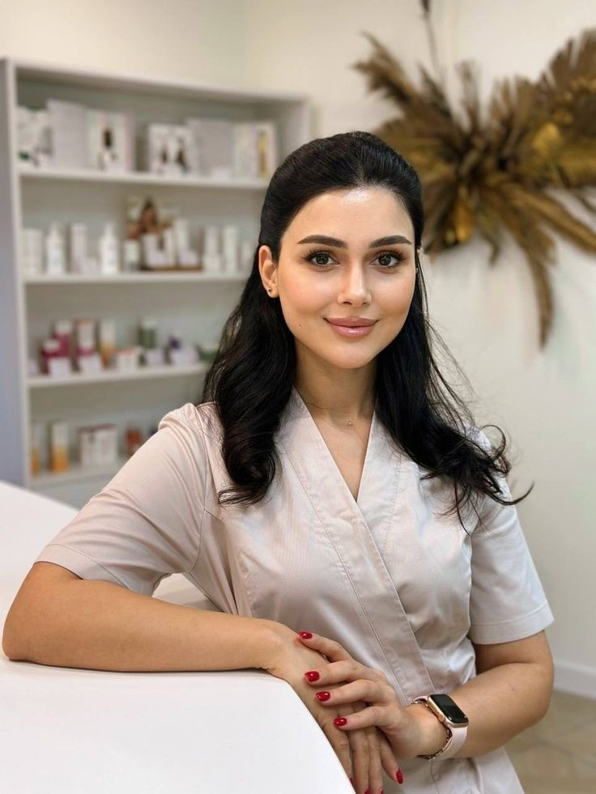

Preenchimento Facial
Restaura o volume perdido com o tempo, suaviza sulcos e devolve harmonia ao rosto — de forma completamente natural.
Duração: 12 a 18 mesesHarmonização facial com resultados naturais — para quem quer se sentir bem de verdade, sem parecer que fez alguma coisa.
Sem compromisso. Sem pressão. Apenas uma conversa honesta sobre o que é possível para você.

A Dra. Débora é médica especialista em harmonização facial com mais de 12 anos dedicados à medicina estética. Mas o que define o trabalho dela não é só o tempo de carreira — é a forma como ela escuta.
Cada paciente chega com uma história, um incômodo diferente, uma versão de si mesma que quer reencontrar. A Dra. Débora não segue fórmulas prontas. Ela cria um protocolo pensado para você — sua estrutura facial, seu estilo de vida, o resultado que faz sentido para a sua beleza.
Membro da Sociedade Brasileira de Medicina Estética (SBME), com formação continuada e atualização constante nos procedimentos mais seguros e eficazes do mercado.
Cada procedimento é indicado individualmente — nunca por modinha, sempre por necessidade.
Restaura o volume perdido com o tempo, suaviza sulcos e devolve harmonia ao rosto — de forma completamente natural.
Duração: 12 a 18 mesesSuaviza rugas de expressão sem congelar o rosto. O resultado certo é aquele em que ninguém percebe que você fez — só que você está mais descansada.
Duração: 4 a 6 mesesEstimula a produção natural de colágeno da sua pele — um rejuvenescimento que evolui com o tempo e dura mais.
Duração: até 24 mesesDefine, hidrata e adiciona volume com proporção e equilíbrio. Lábios bonitos não precisam ser exagerados.
Resultados imediatosHidratação profunda e luminosidade de dentro para fora. Pele viçosa, saudável e com aparência de descanso real.
Protocolo: 3 sessõesLifting não cirúrgico que reposiciona e firma o rosto. Ideal para quem quer resultado visível sem passar por cirurgia.
Duração: 12 a 18 mesesNão sabe qual procedimento é para você? A avaliação resolve isso.
Agendar avaliação gratuitaAntes e depois reais de pacientes reais — com autorização e orgulho.
Cada resultado é único. Na sua avaliação, a Dra. Débora explica honestamente o que é possível alcançar para o seu caso específico.
Nada de pacote padrão. O que funciona para uma paciente pode não ser o certo para você — e a Dra. Débora sabe disso.
Se um procedimento não for o indicado para o seu caso, você vai ouvir isso. A Dra. Débora não realiza o que não vai trazer benefício real.
A meta não é mudar quem você é — é realçar o que já existe. Você continua sendo você, só que com mais harmonia.
Produtos certificados pela Anvisa, técnica apurada e protocolos atualizados com os maiores padrões da medicina estética.
O cuidado não termina quando você sai do consultório. A Dra. Débora acompanha sua evolução e está disponível para qualquer dúvida.
Um espaço acolhedor, discreto e confortável — para você se sentir à vontade desde o primeiro minuto.
Uma conversa de 30 a 40 minutos onde você fala o que incomoda, o que quer, e a Dra. Débora escuta — de verdade. Sem julgamento, sem pressão.
Com base na avaliação, a Dra. Débora apresenta as opções mais indicadas para o seu caso, com transparência total sobre resultados esperados e duração.
Executado com técnica, cuidado e atenção aos detalhes. Você é informada de tudo antes, durante e depois.
Retorno garantido para avaliar o resultado. A Dra. Débora está disponível para qualquer dúvida que surgir ao longo do processo.
Avaliação 4,9/5 — baseada em mais de 347 avaliações no Google e Doctoralia
O resultado foi exatamente o que eu esperava — natural e equilibrado. A Dra. Débora me orientou com muita honestidade desde a primeira consulta, e isso me deu segurança em todo o processo.
Tinha muito medo de parecer artificial. Ela entendeu exatamente o que eu queria e o resultado ficou melhor do que eu imaginei. Atenção ao detalhe impressionante.
Fui com muitas dúvidas e saí com total clareza. A médica foi honesta sobre o que era possível e o que não era — e isso foi fundamental para eu me sentir segura na decisão.
A maioria é realizada com anestésico tópico ou local. O desconforto é mínimo — a maioria das pacientes descreve apenas uma leve pressão. Antes de qualquer procedimento, a Dra. Débora explica exatamente o que você vai sentir.
Depende do procedimento. Toxina botulínica dura em média 4 a 6 meses; preenchimentos, de 12 a 18 meses; bioestimuladores, até 24 meses. Na avaliação, você recebe uma estimativa real para o seu caso.
Sim, a maioria dos procedimentos estéticos requer manutenção periódica para manter o resultado. A Dra. Débora explica o calendário ideal para cada protocolo — sem pressão para você fazer mais do que precisa.
Os procedimentos são indicados principalmente para adultos acima de 18 anos. Não há limite máximo de idade — o importante é a avaliação clínica individual.
Na maioria dos casos, sim. Alguns procedimentos pedem cuidados simples nas primeiras 24 a 48 horas. Você recebe todas as instruções antes de sair do consultório.
Exatamente por isso a avaliação existe. Não faça escolhas baseadas em tendências ou no que funcionou para outra pessoa. A Dra. Débora indica o que faz sentido para você.
Todos os produtos usados são registrados na Anvisa e provenientes de fornecedores certificados. Segurança não é opcional — é o ponto de partida.